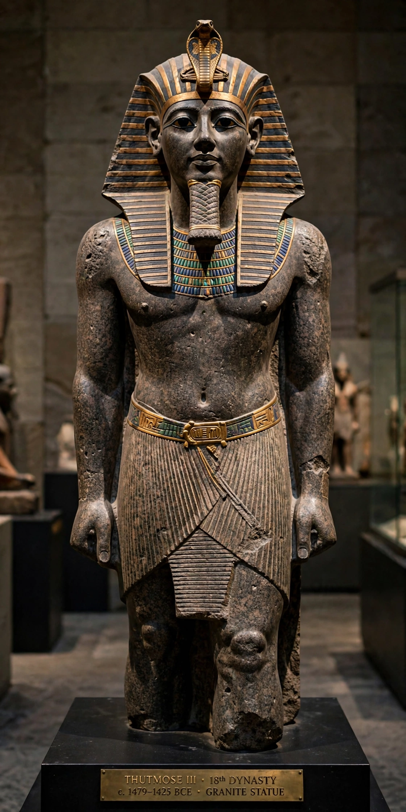

Thutmose III

Thutmose III (variously also spelt Tuthmosis or Thothmes) was the sixth pharaoh of the 18th Dynasty of Egypt, reigning officially from 1479 to 1425 BC. For the first 22 years he was co-regent with his stepmother and aunt Hatshepsut, who ruled as pharaoh in her own right; after her death he campaigned extensively and built the Egyptian empire to its greatest territorial extent, earning a reputation as one of ancient Egypt's greatest warrior kings.
Military campaigns
Thutmose conducted at least 17 campaigns in 20 years. The first and most famous was the Battle of Megiddo (1457 BC), where he defeated a Canaanite coalition led by the king of Kadesh after a bold march through the narrow Aruna pass; the account inscribed at Karnak is the most detailed battle narrative surviving from ancient Egypt. Later campaigns subdued Syria, crossed the Euphrates to confront Mitanni, and campaigned in Nubia, extending Egyptian control from the Fourth Cataract of the Nile to the Euphrates.
Building and administration
Thutmose built extensively at Karnak, adding the Festival Hall and a "botanical garden" chamber carved with plants and animals from his campaigns, and erected obelisks across Egypt — several of which now stand in Rome, London, New York and Istanbul. His administration, staffed by able officials such as the vizier Rekhmire, organised the empire's tribute and trade. Late in his reign he appears to have attempted to erase Hatshepsut's images and names, though the reasons remain debated.
Death and mummy
Thutmose III was buried in tomb KV34 in the Valley of the Kings. His mummy was later reburied by priests in the Royal Cache at Deir el-Bahari, where it was discovered in 1881. He was succeeded by his son Amenhotep II.
See also: Hatshepsut, Battle of Megiddo, New Kingdom of Egypt.